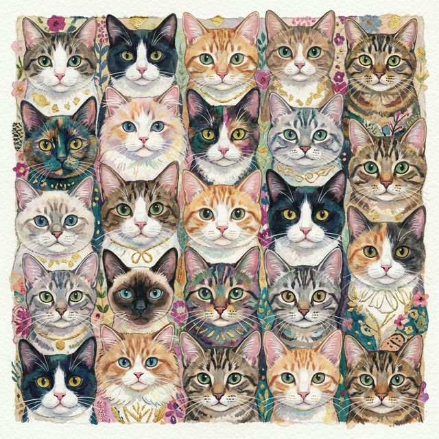

Sobre Nosotros
Conoce la historia detrás de tu blog felino favorito
Nuestra Historia
Gatos Blog nació en 2023 de una simple pasión: nuestro amor incondicional por los gatos.
Lo que empezó como un pequeño proyecto personal se transformó rápidamente en una comunidad vibrante de amantes de los gatos.
Creemos firmemente que cada gato tiene una historia que contar y cada humano tiene algo que aprender de ellos.

Nuestra Misión
Educación
Información precisa sobre cuidado felino
Comunidad
Espacio seguro para amantes de los gatos
Adopción
Promover adopción responsable
Bienestar
Advocar por el trato humano
Nuestro Impacto
50k+
Lectores
1.2k+
Artículos
350+
Adoptados
15k+
Fotos